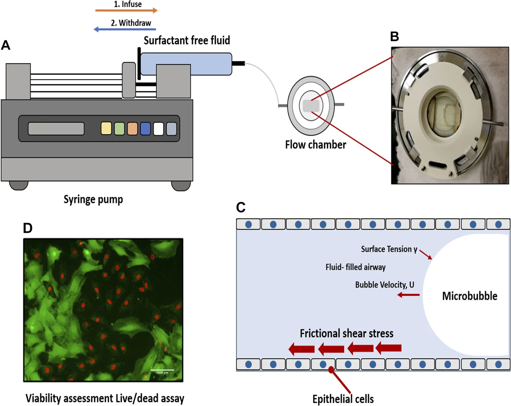
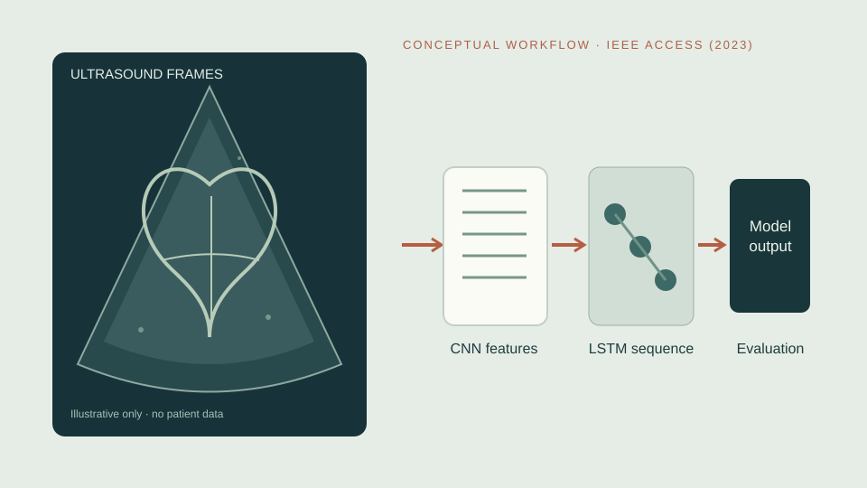
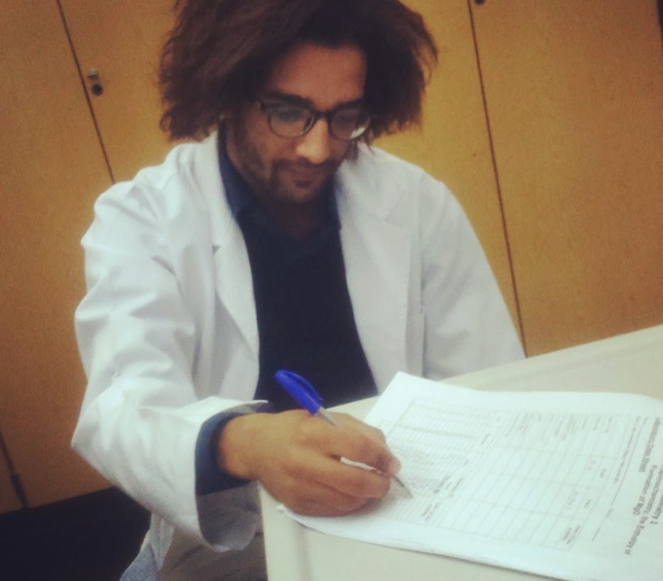
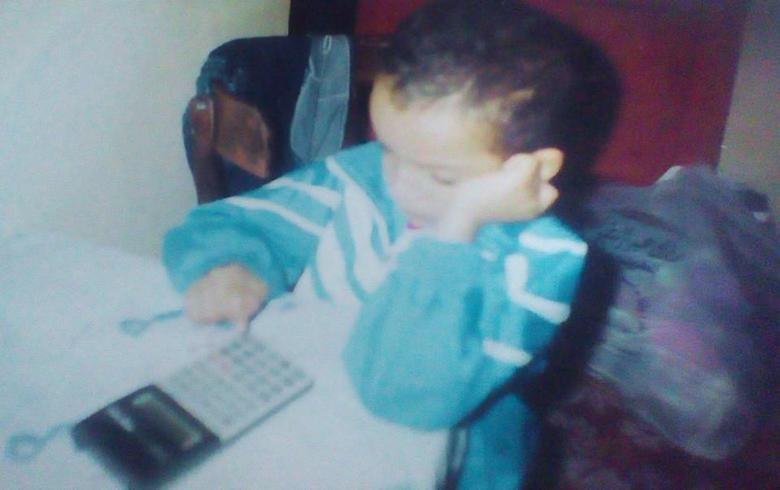
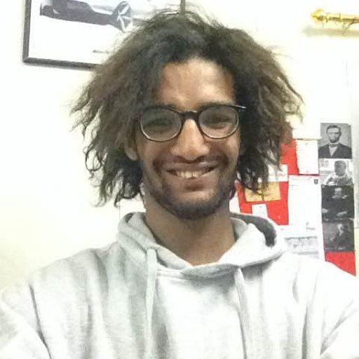
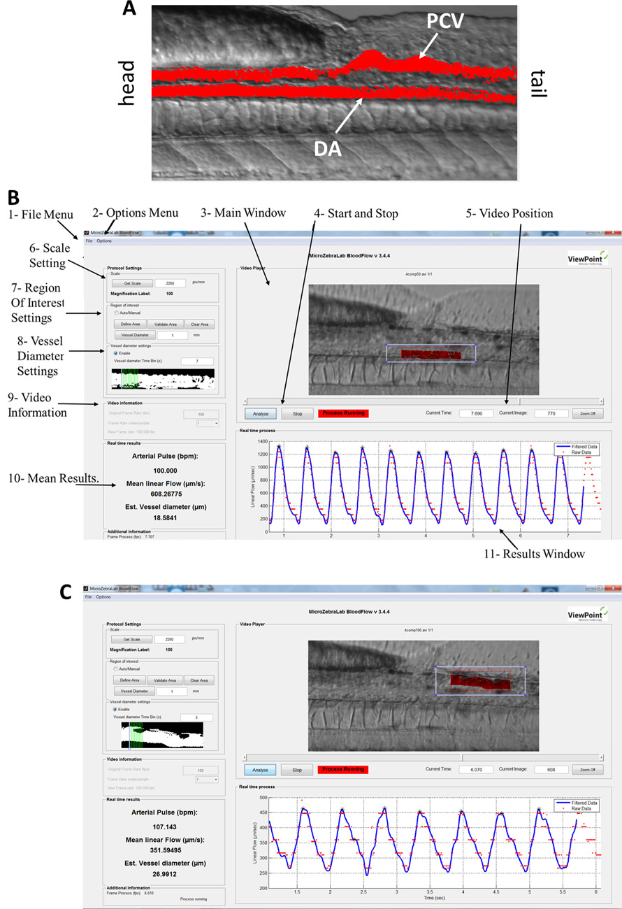
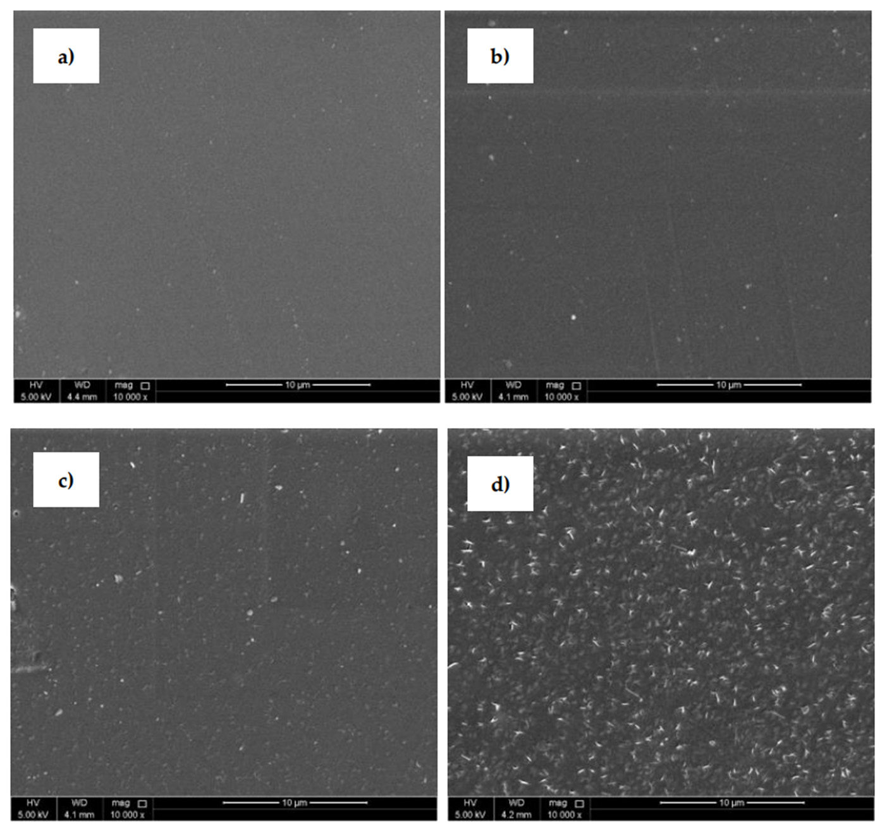
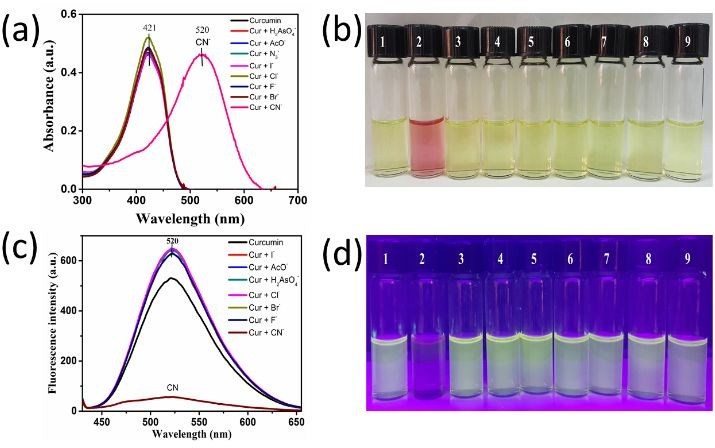

FIRST AUTHOR · 2021
FIRST AUTHOR · 2021When airways reopen, what happens to their cells?
Mechanically induced epithelial injury, pharmacological protection, and the question of what cellular forces do.
Mahmoud Khatib A. A. Al-Ruweidi
I started with extracts, synthetic chemistry and imine sensors. Zebrafish microscopy and experiments on mechanically injured lung cells later taught me how quickly a convincing chemical explanation can fail when it meets physiology. That is what drew me towards pharmaceutical science.
My current MSc research examines dexamethasone niosomes and proniosomes intended for inhalation, including the practical demands of nebulization and aerosol delivery. I am interested in the route from molecular design to the exposure a living system actually receives, and in the experiments that reveal where the proposed route breaks down.

Go straight to the record.
An evolving scientific direction
My present projects are part of a larger scientific interest in therapeutic discovery, engineered delivery and the way we test candidate medicines. I want to work with human-relevant disease models, engineered cellular systems and computational approaches that make biological predictions worth trusting. This direction grows from existing experiments, but points well beyond my current projects and methods.
Explore my research horizonI did not plan to move from organic chemistry to zebrafish, pulmonary cell injury and inhalable formulations. The work moved when the questions did. Some of the most useful lessons came from experiments that refused to behave.

A classroom specimen and the habit of looking closely, long before a research title.
Enter the story ↗
The laboratory, glassware and the slow work of finding out whether an idea survives a test.
See the research ↗
Zebrafish imaging brought biological development into focus and made observation a quantitative problem.
Watch the experiments ↗
Mechanical injury, aerosol delivery and the question of how formulation changes biological response.
Investigate the science ↗Illness also changed how I understand uncertainty in medicine. It did not create the curiosity, but it changed the questions I brought to it.
02 / Selected investigations
Selected projects in pulmonary mechanobiology, developmental imaging, biomaterials, therapeutic design and computational research. Open a case study for the scientific question, methods, publication record and the scope of my contribution.
FIRST AUTHOR · 2021Mechanically induced epithelial injury, pharmacological protection, and the question of what cellular forces do.
 COLLABORATIVE · 2018
COLLABORATIVE · 2018Endothelial cilia, embryonic cranial vessels, zebrafish imaging and mechanical stimuli.
 COLLABORATIVE · 2020–21
COLLABORATIVE · 2020–21Electrospinning, cold plasma, and the relationship between polymer surfaces and function.

Dexamethasone niosomes, proniosomes, formulation and aerosol assessment.

Patent families, mechanism, and translational development of an oncology target.

A peer-reviewed CNN–LSTM and stacking-model pilot study for congenital heart disease detection. My documented work includes ultrasound-data preparation, model evaluation and scientific interpretation.
Python, physicochemical descriptors, material-property databases and reproducible decision-support tools for nanocarrier preformulation, with explicit uncertainty and validation boundaries.
Explore AI & computing portfolio ↗03 / Bibliography
A scholarly bibliography cross-checked against my October 2026 CV, including AI research, pharmaceutical modelling, immunology chapters, materials engineering and historical pharmacy. Published items, accepted manuscripts and chapters with unverified publication details are explicitly distinguished.
The original research is separated here from reviews and book chapters. Each link opens the published paper; contribution details are available in the connected research record.
Current experiments and longer-term interests are described separately: ongoing inhalable formulation project ↗ · future research direction ↗.
The story behind the research
There I am in the early photographs, in a lab coat, among notebooks and people who took science seriously. It would be convenient to call that the beginning. It would also be wrong.

Personal photographic archive · 2015
Personal photographic archive · 2015
Personal photographic archive · 2015
I did not arrive at chemistry with a neat plan to become a pharmaceutical scientist. I arrived with an old habit of asking how things work, and then finding that an answer at one scale was rarely enough.


The earlier years
When I look at these photographs, I do not see evidence that I was destined for a particular career. They remind me that an interest in how the world works existed before I knew the language of research or the names of academic fields.
I was born in Egypt and raised in Qatar, where much of my education and scientific life began. It was a third-culture upbringing in the ordinary sense: Egyptian family roots, everyday life in Qatar, and no particular need to separate the two. The curiosity in these photographs followed me into university, where questions gradually became experiments and research. I still want to understand what I observe, even when doing so means learning an unfamiliar method.
2011 / School anatomy
A school anatomy session, including the examination of a fox specimen, made biological structure something tangible rather than a diagram in a book. Organs had positions, connections and physical constraints. Understanding one part did not explain the animal as a whole.
That lesson stayed with me as I later moved between chemical synthesis, biology and engineering. An explanation that works for an isolated measurement may fail in a whole organism. Around the same period, my own illness began, bringing a less voluntary encounter with the uncertainties of medicine. I discuss that experience separately below.
Read the expanded anatomy story and other research memories ↗
From fascination to experimental work
Chemistry first gave me a way to intervene rather than merely observe. But when I began working with zebrafish vasculature and the injured lung epithelium, the behaviour of a molecule in a flask stopped being an adequate explanation. Formulation was not a detour from these questions. It was the next problem I had to understand.
Some early experiments with fellow chemistry students involved extracting oils from materials such as myrrh and nutmeg and asking whether they might have medicinal relevance. Those efforts developed into more formal work in synthesis, molecular recognition and chemical sensing. The ACS student chapter and Chem Squad gave those questions a life outside any one laboratory. We kept meeting, comparing results and challenging one another's explanations.
Zebrafish vasculature, primary cilia and alveolar epithelial injury forced me to think about scale. A mechanistic hypothesis has to make sense in tissue, under flow and in a living organism. The experimental footage and methods belong beside the claims, not behind them.
Biomaterials, surface modification and pharmaceutical formulations brought the question closer to therapeutic use. My MSc work on inhalable dexamethasone vesicles tests the behaviour of a drug carrier under nebulization and aerosol delivery, where a formulation must confront the physics of its route.
The present question
I want to work close enough to both sides of therapeutics to understand how a biological target becomes an intervention worth testing. Finding a molecular mechanism is not sufficient if a compound cannot reach the right tissue. An elegant carrier is not sufficient if we have misunderstood the biology it is meant to change.
My ambition is to follow a therapeutic problem through its successive constraints. I want to examine the target, question the molecular design, understand transport and cellular response, and test the result in models that reveal where our assumptions fail. A useful scientist should be able to recognize when a chemical problem has become a physiological one, or when an apparent biological failure is really a problem of exposure.
The history of medicine matters here too. It reminds me that certainty is often temporary and that scientific progress depends on asking what an experiment genuinely establishes. That habit has shaped the way I read, design experiments and assess evidence. I do not regard crossing disciplines as an achievement in itself. It is a practical necessity when the problem refuses to stay within one.
Personal experience / Science / Patient support
“No one should have to become a scientist to find reliable answers about their illness.”
Support patients and research ↗For me, eosinophilic disease is not only a subject in the medical literature. It is part of my life.
I was a teenager when persistent gastrointestinal illness began affecting my life in 2011. Recurrent vomiting and other difficult symptoms were followed by years of medical investigations and treatment. My history has included eosinophilic gastroenteritis and evaluation of a wider hypereosinophilic picture. It took a toll on ordinary routines, and at times on my education, examinations, and research.
I lived with the burdens of prolonged glucocorticoid treatment, and later found greater stability with a six-food elimination diet. I am not presenting my experience as a model for anyone else's treatment, or claiming that the condition has been cured. It has taught me how far the language of a clinical diagnosis can be from the uncertainty a patient lives with.
In 2022, the questions raised by that experience helped inspire two chapters I wrote with colleagues about autoimmune diseases of the gastrointestinal tract. The first covered etiology and pathophysiology; the second examined diagnostics and treatments. These were reviews of the scientific literature, not reports of my own illness. Eosinophilic gastrointestinal disease is not necessarily autoimmune, and I do not equate the two. The chapters are one part of my wider scientific work, but they have particular personal significance.
NOVEMBER 17, 2022 · OPEN ACCESS
First-listed author with collaborators · IntechOpen
Read the published chapter ↗NOVEMBER 29, 2022 · OPEN ACCESS
First-listed author with collaborators · IntechOpen
Read the published chapter ↗Independent charities / Official giving links
My story is one among many. Families affected by eosinophilic diseases need reliable information, specialist care and continued research. For readers who wish to help, I am sharing official donation pages for four established, independently verifiable organizations focused on eosinophilic conditions. These are their own websites and donation programs, not a personal fundraising account.
Campaign Urging Research for Eosinophilic Disease · US 501(c)(3), EIN 20-0351832
Focused on eosinophilic gastrointestinal disease. CURED has funded research, exploratory projects, and trainees, including work connected with CEGIR.
Give directly to CURED How CURED uses donations ↗Verify nonprofit: Charity Navigator ↗American Partnership for Eosinophilic Disorders · US 501(c)(3), EIN 76-0700153
Supports people with eosinophil-associated diseases through education, advocacy, and research. Its official giving page includes one-time gifts and recurring support.
Give directly to APFED Explore patient resources ↗Verify nonprofit: Charity Navigator ↗UK-registered eosinophilic diseases charity · Charity no. 1198883
Provides information and practical support for people and families living with eosinophilic conditions, and connects a wider international community.
Give directly to EOS Network Read about its work ↗Verify UK Charity Commission registration ↗US 501(c)(3) · EIN 45-2406486 · Not rated by Charity Navigator
Started as a Cincinnati family support group in 2008. Today it supports families living with eosinophilic disorders through community connections, education and advocacy.
Give directly to EFC Read its mission ↗ Verify 501(c)(3) listing ↗Independent, verified organizations. APFED and CURED are US 501(c)(3) charities associated with CEGIR patient advocacy; EFC is a separately registered US 501(c)(3) that Charity Navigator lists but does not rate; EOS Network is registered with the UK Charity Commission. All four giving links go directly to the organizations' official websites. I do not collect, receive, or process donations and have no financial relationship with these organizations. Linking them does not imply a formal affiliation or endorsement.
Not in a position to donate? Sharing these official resources, learning about the diseases, or participating in legitimate patient and research communities can also make a difference.
BEYOND THIS PAGE
I welcome opportunities to contribute to patient-facing scientific writing, literature reviews, and research communication around eosinophilic and related inflammatory conditions. This invitation is for future collaboration, not a claim of an existing role with any of the organizations linked above.
Contact me about patient-focused research communication ↗Research and clinical information
For those interested in the research landscape, the Consortium of Eosinophilic Gastrointestinal Disease Researchers (CEGIR) ↗ brings together clinical and basic research on eosinophilic gastrointestinal conditions. This is a research-information link, not a separate donation destination.
My account reflects personal experience and is not medical advice. Eosinophilic gastrointestinal diseases are not necessarily autoimmune disorders. None of the organizations listed here sponsors or endorses this personal website.
From the personal history / 2011–2026
Anatomy lessons in 2011, the creation of QUACS in 2015, international conferences, and laboratory work across the following decade belong to the same story. The visual archive preserves documented moments from that development, with dates retained where they are known.
Explore the dated photo & video archive ↗

Research philosophy / First principles & systems
My research is not organized around a single material or animal model. I begin by understanding the system under study, examining the mechanisms that might explain an observation, and deciding what experiment could overturn my interpretation. The methods change because the problems change.
Understand matter: synthesis, molecular recognition, structure and reaction.
Engineer matter: polymers, plasma activation, surface properties and interfaces.
Interrogate living systems: mechanical forces, imaging, transport and response.
Design interventions: delivery, formulation, exposure and therapeutic consequence.
Examine knowledge: what counted as evidence, how medicines were made and why practices endured.
Evaluate evidence: medical AI, biomedical imaging, Python, model-based pharmaceutics and reproducible research software.
Across these fields runs a second concern: building the laboratories, communities and institutions that allow rigorous science to happen.
Explore the experimental methods and original figures ↗ Quality & process thinking ↗Moving evidence / Animal research
Zebrafish heart development and optical observation invite a different kind of biological measurement. The Methods Atlas also preserves a short avian egg-preparation recording from the laboratory archive.
04 / Research methods
An experimental record ranging from chemical synthesis and spectroscopy to plasma engineering, cell culture, cardiovascular models, imaging and quantitative biology. The complete atlas connects each technique with a scientific question and published evidence. Explore the full Techniques Atlas ↗
Methods are classified by hands-on experimental experience, collaborative analysis, current development and formal training. Explore the AI, scientific computing and data-analysis portfolio ↗
Visual methods index
Published experimental figures from my coauthored research in cell injury, zebrafish imaging, biomaterials and chemical sensing, alongside clearly identified original conceptual illustrations. Each figure links to its paper and attribution.

Published figure · Zebrafish · Video microscopy
Published figure · PLA surface morphology · SEM
Published figure · Spectroscopic probe · Cyanide sensingCurrent research · Inhalable vesiclesResearch context · Therapeutic molecular targetsBioimaging · QU Biomedical Research Center
My work at the Biomedical Research Center extended to establishing and developing experimental imaging workflows. With zebrafish, pulmonary injury and cardiovascular models, I worked across preparation, acquisition, high-speed microscopy and quantitative interpretation. The long-term value of an imaging capability lies not just in its instruments but in its reproducible protocols and accessible research workflows.
Imaging and scientific infrastructure ↗ILLUSTRATION · NO CLAIM OF EXPERIMENTAL MICROGRAPHQatar University × Medical College of Wisconsin
My zebrafish vascular-development work formed part of a collaboration between Qatar University and the Medical College of Wisconsin. In this recorded seminar, Qatar University Research explores the opportunities and challenges of international research partnerships through that collaboration.
Watch the full recording on YouTube ↗Research practice / Quality & process improvement
I do not see quality management as paperwork added after the science. Whether I am working with a synthesis, an inhaled formulation, a microscopy workflow or an organisational process, I want to know where variation enters, how it is measured and whether the result can be reproduced.
Lean and Six Sigma give that thinking a practical structure. They help separate a recurring process fault from random fluctuation, make a change testable and preserve what was learned. They do not replace chemical or biological mechanism; they help build a more dependable experimental system around it.
Specify a useful endpoint: dose, image quality, assay reliability or cycle time.
Characterise variability, measurement error and process conditions.
Distinguish plausible mechanisms from artefacts and process drift.
Test changes to formulations, protocols or hand-offs using evidence.
Document checks, traceability and limits that keep the method dependable.
Selected professional development / 2021–2025
Quality training complements my experimental background and experience with SOPs, process maps, controlled documentation, KPIs and audit preparation. Individual course credentials are identified by issuer rather than represented as organisational accreditation.
Three issuer-specific belt records. Green Belt programme: 17.5 CPD/CEU hours in the supplied credential record.
QMS professional training · 15 hours / three days.
Professional development in testing and calibration laboratory competence.
Training in environmental management systems.
Additional training in food-safety management systems and process assurance.
These are training and issuer-specific credential records, not ASQ Certified Six Sigma Green Belt (CSSGB) status, ISO auditor accreditation or certification of an organisation. The DMAIC illustration is an original typographic graphic, not a certificate scan.
View quality credentials in my academic profile ↗A selective chronology
Examining a fox specimen makes biological structure tangible years before I enter a research laboratory.
Qatar University's ACS student chapter is established in 2015. Early university laboratory work and the independent Chem Squad conversations take shape by 2016.
Student-chapter representation and research presentations at the 254th ACS National Meeting in Washington, DC, documented in contemporary reporting.
Published work spans zebrafish endothelial cilia and cardiovascular imaging, pulmonary epithelial mechanobiology, molecular sensing and modified polymer surfaces. I complete my BSc in Chemistry in 2021.
I begin the MSc in Pharmaceutical Sciences at Qatar University, building towards experimental work in pulmonary formulations and drug delivery.
Peer-reviewed fetal-echocardiography machine learning appears in 2023. Materials and nanotextile work also become part of the research record.
I return to graduate study in 2025. Work on inhalable vesicles continues alongside scientific computing, research writing and the 2026 SLIT2–ROBO patent review.
The master's thesis remains in progress. Completion in 2027 is an expectation, not an awarded degree or a published experimental outcome.
05 / History of pharmacy & medicine
I began studying history alongside chemistry because the origin of an idea matters as much to me as the mechanism of a molecule. Historical pharmacy lets me ask what physicians, pharmacists and patients believed a medicine should do, how they made it reproducible, and how material constraints shaped practice.
My historical research looks for arguments in primary sources rather than treating manuscripts as decorative illustrations. A pharmacological analogy can illuminate an old problem, but it is not proof of an uninterrupted scientific lineage.
View historical scholarship ↗Set in Ayyubid–Mamluk Cairo, this study follows Abū al-Munā Dāwūd ibn Abī Naṣr al-Kūhīn al-ʿAṭṭār, a Jewish pharmacist whose Minhāj al-dukkān illuminates the practical decisions behind preparing, substituting and preserving medicines. Formulary texts and surviving prescription evidence reveal how therapeutic reliability was negotiated in practice.
MAHMOUD K. AL-RUWEIDI ET AL. · HISTORY OF PHARMACY AND PHARMACEUTICALS · RESEARCH IN THE HISTORY OF PHARMACYFORTHCOMING · MEDICINES, PHARMACISTS AND THE PRACTICES OF MEDIEVAL CAIRO06 / Essays & public scientific writing
Scientific work also requires public criticism and explanation. These essays examine drug discovery, research institutions, scientific credit, history and the way knowledge enters public life.
07 / In the public record
Independent reporting and institutional publications are important parts of an academic record. These links lead directly to the original sources rather than reproducing their copyrighted pages.
A report naming my participation in the 254th ACS National Meeting and the research presented by our Qatar University delegation.
NOVEMBER 4, 2017 · ORIGINAL REPORT ↗QATAR UNIVERSITY RESEARCH MAGAZINE · ISSUE 11The May 2019 magazine feature names me among the QU undergraduate research team working with collaborators on zebrafish cranial vessels and endothelial cilia.
MAY 2019 · PRINTED PP. 4–5 · READ ORIGINAL PDF ↗08 / Building beyond the laboratory
One lesson from scientific research is that having knowledge and making it accessible are different problems. I have also worked in education, scholarly community-building, and the design of organizations that help people learn and act.
I am a co-founder and partner in Majales, which is still in its initial founding round. Zawya is another early-stage education and knowledge project. My work in these initiatives centres on developing programmes and the research behind them; they are not substitutes for the laboratory work.
Discuss collaboration ↗Co-founding and early-stage partnership in knowledge and educational initiatives. Working through the initial founding round, with an emphasis on concept development and research-led community building.
09 / Teaching & scientific community
Building a student scientific chapter taught me something that publications alone could not: access to equipment, experienced researchers and a serious scientific community can change what a student believes is possible. I have remained involved in practical training, research mentoring and scientific events while pursuing research of my own.
My work also includes scientific communication and educational entrepreneurship through Majales and Zawya, writing for DDO, and a continuing independent chemistry circle dating back to 2016. Chem Squad reflects the part of research that begins with friendship, curiosity and weekly discussion. These activities complement the research record; they do not substitute for it.
Served two years as chapter president and subsequently as adviser, developing chemistry outreach, visiting lectures, practical workshops and travel opportunities for students.
Supported delegations and represented student chemistry work at ACS national meetings in Washington, Boston and San Diego.
Organised a biomaterials-focused conference and contributed to scientific presentations, specialist workshops and interdisciplinary dialogue.
Research mentoring, science education and co-founding Arabs in Bio(medical) Engineering, alongside professional and research-methodology workshops.
Judging student research, peer-review activities and writing about research practice and the attribution of scientific contributions.
From the chapter archive / 2015–2019
I founded Qatar University's ACS student chapter with fellow students in 2015. We wanted a working scientific community, not another line on our CVs. The chapter hosted lectures, taught laboratory techniques, brought chemistry to public events and opened routes for students to attend international meetings. It became a practical lesson in building the institutions that young researchers need.
The chapter was recognised in December 2015. I served as president for two years, followed by an advisory role during its development.
Coordinated Central Laboratories Unit instrumentation training for 29 students and practical research-methodology sessions.
Chem Talks, public demonstrations, mechanochemistry activities, the Time 0s astrochemistry event and a lecture by historian of chemistry Eric Scerri.
Chapter trips and research presentations associated with ACS meetings in Washington, Boston and San Diego. The 2017 Washington participation is independently documented.
The chapter's Instagram archive preserves contemporary photographs and announcements from these student-led activities. Explore documented science engagement ↗
10 / Academic profile
My central interest is the movement from molecular design to biological function and, eventually, practical therapeutic performance.
My background includes chemistry, pharmaceutical sciences, biomaterials, biological systems, computational approaches and scholarly historical research. The connections between these areas matter more to me than the labels alone.
Read academic CV ↗MSc Pharmaceutical Sciences
Qatar University · Thesis in progress, expected 2027
BSc Chemistry
Qatar University · 2021
Minor: History of Arab and Islamic Civilization
Pulmonary pharmaceutics, therapeutic delivery systems, formulation science and mechanistic drug discovery.
Arabic and Islamic pharmaceutical history, material practices, primary texts and the interpretation of medical knowledge.
Materials chemistry · Molecular sensing · Mechanobiology · Zebrafish biology · Biomedical imaging · Translational research · History of pharmacy.
Qatar · International research and collaboration